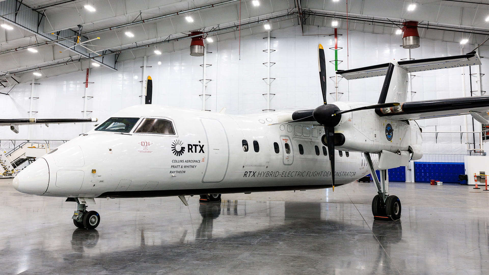

PRATT & WHITNEY CANADA
Hybrid Electric Propulsion Systems Integration Intern
Montreal, Quebec
Responsible PE for testing and integrating nacelle-mounted heat exchangers, leading weekly supplier meetings to resolve design issues and address schedule slips.
- Created flight-test procedures and helped set safety-of-flight requirements.
- Designed parts, built CATIA assemblies, and managed system installation around the engine and aircraft to prevent component clashes.
- Selected and placed flight-test instrumentation in the demonstrator aircraft and contributed to cockpit modifications.
- Participated in high-level design reviews covering engine installation, aircraft performance, cockpit modifications, flight-test profiles, high-voltage systems, and structural loads.
